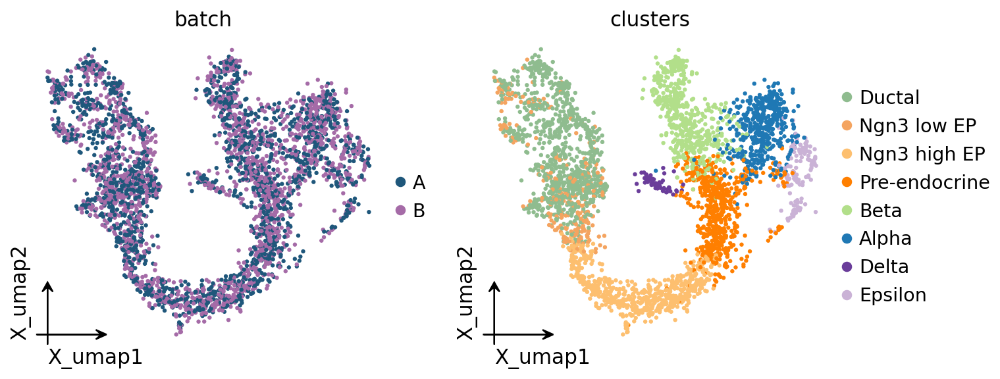

Multi-sample metacells with batch correction#
When your data has ≥2 samples / donors / batches, computing metacells naively is a trap: most backends partition on transcriptional similarity, and an uncorrected embedding makes batch one of the strongest similarity axes. The result is metacells that are pure within a batch but never span batches — useless for any cross-sample comparison.
The fix is the standard one: correct the batch effect first, build metacells on the corrected embedding, and verify each metacell mixes the samples.
This notebook:
Builds a controlled 2-batch dataset (so the batch effect is visible and the correction is verifiable).
Shows metacells on the uncorrected embedding fragmenting by batch.
Runs
ov.single.batch_correction(Harmony) and rebuilds metacells on the corrected embedding.Quantifies the improvement with a per-metacell batch-entropy metric.
See t_metacell_recommended for the single-sample workflow, and zoo/index to swap backends.
1. Setup#
import warnings
warnings.filterwarnings('ignore')
import numpy as np
import pandas as pd
import omicverse as ov
import scvelo as scv # demo dataset only
ov.plot_set()
🔬 Starting plot initialization...
🧬 Detecting GPU devices…
✅ NVIDIA CUDA GPUs detected: 1
• [CUDA 0] NVIDIA H100 80GB HBM3
Memory: 79.1 GB | Compute: 9.0
____ _ _ __
/ __ \____ ___ (_)___| | / /__ _____________
/ / / / __ `__ \/ / ___/ | / / _ \/ ___/ ___/ _ \
/ /_/ / / / / / / / /__ | |/ / __/ / (__ ) __/
\____/_/ /_/ /_/_/\___/ |___/\___/_/ /____/\___/
🔖 Version: 2.2.0 📚 Tutorials: https://omicverse.readthedocs.io/
✅ plot_set complete.
2. Build a controlled 2-batch dataset#
We split the pancreas dataset into two synthetic batches and add a multiplicative per-gene batch effect to batch B (a common, realistic form of technical variation — different capture efficiency / sequencing depth profile). Using a synthetic effect means we know the ground truth: celltype is shared, batch is technical, and a perfect metacell should mix the two batches within each celltype.
adata = scv.datasets.pancreas()
# Assign each cell to batch A or B at random.
rng = np.random.default_rng(0)
adata.obs['batch'] = rng.choice(['A', 'B'], size=adata.n_obs)
# Inject a per-gene multiplicative batch effect into batch B.
import scipy.sparse as sp
batch_b = (adata.obs['batch'] == 'B').to_numpy()
gene_factor = rng.lognormal(mean=0.0, sigma=0.5, size=adata.n_vars)
X = adata.X.toarray() if sp.issparse(adata.X) else np.asarray(adata.X)
X[batch_b] = X[batch_b] * gene_factor
adata.X = sp.csr_matrix(np.rint(X))
print('batch sizes:', adata.obs['batch'].value_counts().to_dict())
batch sizes: {'B': 1900, 'A': 1796}
3. Preprocess and look at the uncorrected embedding#
Standard omicverse flow. We keep batch_key='batch' in ov.pp.preprocess
so HVG selection is batch-aware.
adata = ov.pp.qc(adata,
tresh={'mito_perc': 0.20, 'nUMIs': 500, 'detected_genes': 250},
mt_startswith='mt-')
adata = ov.pp.preprocess(adata, mode='shiftlog|pearson', n_HVGs=2000,
batch_key='batch')
adata.layers['lognorm'] = adata.X.copy()
adata = adata[:, adata.var.highly_variable_features]
ov.pp.scale(adata)
ov.pp.pca(adata, layer='scaled', n_pcs=30)
adata.obsm['X_pca'] = adata.obsm['scaled|original|X_pca']
ov.pp.neighbors(adata, n_neighbors=15, use_rep='X_pca')
ov.pp.umap(adata)
print('adata:', adata.shape)
🖥️ Using CPU mode for QC...
📊 Step 1: Calculating QC Metrics
✓ Gene Family Detection:
┌──────────────────────────────┬────────────────────┬────────────────────┐
│ Gene Family │ Genes Found │ Detection Method │
├──────────────────────────────┼────────────────────┼────────────────────┤
│ Mitochondrial │ 13 │ Auto (MT-) │
├──────────────────────────────┼────────────────────┼────────────────────┤
│ Ribosomal │ 0 ⚠️ │ Auto (RPS/RPL) │
├──────────────────────────────┼────────────────────┼────────────────────┤
│ Hemoglobin │ 0 ⚠️ │ Auto (regex) │
└──────────────────────────────┴────────────────────┴────────────────────┘
✓ QC Metrics Summary:
┌─────────────────────────┬────────────────────┬─────────────────────────┐
│ Metric │ Mean │ Range (Min - Max) │
├─────────────────────────┼────────────────────┼─────────────────────────┤
│ nUMIs │ 7359 │ 3173 - 20461 │
├─────────────────────────┼────────────────────┼─────────────────────────┤
│ Detected Genes │ 2453 │ 1421 - 4492 │
├─────────────────────────┼────────────────────┼─────────────────────────┤
│ Mitochondrial % │ 0.7% │ 0.2% - 4.3% │
├─────────────────────────┼────────────────────┼─────────────────────────┤
│ Ribosomal % │ 0.0% │ 0.0% - 0.0% │
├─────────────────────────┼────────────────────┼─────────────────────────┤
│ Hemoglobin % │ 0.0% │ 0.0% - 0.0% │
└─────────────────────────┴────────────────────┴─────────────────────────┘
📈 Original cell count: 3,696
🔧 Step 2: Quality Filtering (SEURAT)
Thresholds: mito≤0.2, nUMIs≥500, genes≥250
📊 Seurat Filter Results:
• nUMIs filter (≥500): 0 cells failed (0.0%)
• Genes filter (≥250): 0 cells failed (0.0%)
• Mitochondrial filter (≤0.2): 0 cells failed (0.0%)
✓ Filters applied successfully
✓ Combined QC filters: 0 cells removed (0.0%)
🎯 Step 3: Final Filtering
Parameters: min_genes=200, min_cells=3
Ratios: max_genes_ratio=1, max_cells_ratio=1
✓ Final filtering: 0 cells, 12,347 genes removed
🔍 Step 4: Doublet Detection
💡 Running pyscdblfinder (Python port of R scDblFinder)
🔍 Running scdblfinder detection...
[ScDblFinder] wrote scDblFinder_score + scDblFinder_class — threshold=0.181
✓ scDblFinder completed: 66 doublets removed (1.8%)
╭─ SUMMARY: qc ──────────────────────────────────────────────────────╮
│ Duration: 18.3171s │
│ Shape: 3,696 x 27,998 (Unchanged) │
│ │
│ CHANGES DETECTED │
│ ──────────────── │
│ ● OBS │ ✚ cell_complexity (float) │
│ │ ✚ detected_genes (int) │
│ │ ✚ hb_perc (float) │
│ │ ✚ mito_perc (float) │
│ │ ✚ nUMIs (float) │
│ │ ✚ n_counts (float) │
│ │ ✚ n_genes (int) │
│ │ ✚ n_genes_by_counts (int) │
│ │ ✚ passing_mt (bool) │
│ │ ✚ passing_nUMIs (bool) │
│ │ ✚ passing_ngenes (bool) │
│ │ ✚ pct_counts_hb (float) │
│ │ ✚ pct_counts_mt (float) │
│ │ ✚ pct_counts_ribo (float) │
│ │ ✚ ribo_perc (float) │
│ │ ✚ total_counts (float) │
│ │
│ ● VAR │ ✚ hb (bool) │
│ │ ✚ mt (bool) │
│ │ ✚ ribo (bool) │
│ │
╰────────────────────────────────────────────────────────────────────╯
🔍 [2026-05-19 18:46:00] Running preprocessing in 'cpu' mode...
Begin robust gene identification
After filtration, 15651/15651 genes are kept.
Among 15651 genes, 15651 genes are robust.
✅ Robust gene identification completed successfully.
Begin size normalization: shiftlog and HVGs selection pearson
🔍 Count Normalization:
Target sum: 500000.0
Exclude highly expressed: True
Max fraction threshold: 0.2
⚠️ Excluding 4 highly-expressed genes from normalization computation
Excluded genes: ['Pyy', 'Sst', 'Ins1', 'Ghrl']
✅ Count Normalization Completed Successfully!
✓ Processed: 3,630 cells × 15,651 genes
✓ Runtime: 0.24s
🔍 Highly Variable Genes Selection (Experimental):
Method: pearson_residuals
Target genes: 2,000
Batch key: batch
Theta (overdispersion): 100
✅ Experimental HVG Selection Completed Successfully!
✓ Selected: 2,000 highly variable genes out of 15,651 total (12.8%)
✓ Results added to AnnData object:
• 'highly_variable': Boolean vector (adata.var)
• 'highly_variable_rank': Float vector (adata.var)
• 'highly_variable_nbatches': Int vector (adata.var)
• 'highly_variable_intersection': Boolean vector (adata.var)
• 'means': Float vector (adata.var)
• 'variances': Float vector (adata.var)
• 'residual_variances': Float vector (adata.var)
Time to analyze data in cpu: 1.33 seconds.
✅ Preprocessing completed successfully.
Added:
'highly_variable_features', boolean vector (adata.var)
'means', float vector (adata.var)
'variances', float vector (adata.var)
'residual_variances', float vector (adata.var)
'counts', raw counts layer (adata.layers)
End of size normalization: shiftlog and HVGs selection pearson
╭─ SUMMARY: preprocess ──────────────────────────────────────────────╮
│ Duration: 1.7042s │
│ Shape: 3,630 x 15,651 (Unchanged) │
│ │
│ CHANGES DETECTED │
│ ──────────────── │
│ ● VAR │ ✚ highly_variable (bool) │
│ │ ✚ highly_variable_features (bool) │
│ │ ✚ highly_variable_intersection (bool) │
│ │ ✚ highly_variable_nbatches (int) │
│ │ ✚ highly_variable_rank (float) │
│ │ ✚ means (float) │
│ │ ✚ n_cells (int) │
│ │ ✚ percent_cells (float) │
│ │ ✚ residual_variances (float) │
│ │ ✚ robust (bool) │
│ │ ✚ variances (float) │
│ │
│ ● UNS │ ✚ history_log │
│ │ ✚ hvg │
│ │ ✚ log1p │
│ │
│ ● LAYERS │ ✚ counts (sparse matrix, 3630x15651) │
│ │
╰────────────────────────────────────────────────────────────────────╯
╭─ SUMMARY: scale ───────────────────────────────────────────────────╮
│ Duration: 0.6022s │
│ Shape: 3,630 x 2,000 (Unchanged) │
│ │
│ CHANGES DETECTED │
│ ──────────────── │
│ ● LAYERS │ ✚ scaled (array, 3630x2000) │
│ │
╰────────────────────────────────────────────────────────────────────╯
computing PCA🔍
with n_comps=30
🖥️ Using sklearn PCA for CPU computation
🖥️ sklearn PCA backend: CPU computation
📊 PCA input data type: ArrayView, shape: (3630, 2000), dtype: float64
🔧 PCA solver used: covariance_eigh
finished✅ (1.84s)
╭─ SUMMARY: pca ─────────────────────────────────────────────────────╮
│ Duration: 1.8455s │
│ Shape: 3,630 x 2,000 (Unchanged) │
│ │
│ CHANGES DETECTED │
│ ──────────────── │
│ ● UNS │ ✚ scaled|original|cum_sum_eigenvalues │
│ │ ✚ scaled|original|pca_var_ratios │
│ │
│ ● OBSM │ ✚ scaled|original|X_pca (array, 3630x30) │
│ │
╰────────────────────────────────────────────────────────────────────╯
🖥️ Using Scanpy CPU to calculate neighbors...
🔍 K-Nearest Neighbors Graph Construction:
Mode: cpu
Neighbors: 15
Method: umap
Metric: euclidean
Representation: X_pca
🔍 Computing neighbor distances...
🔍 Computing connectivity matrix...
💡 Using UMAP-style connectivity
✓ Graph is fully connected
✅ KNN Graph Construction Completed Successfully!
✓ Processed: 3,630 cells with 15 neighbors each
✓ Results added to AnnData object:
• 'neighbors': Neighbors metadata (adata.uns)
• 'distances': Distance matrix (adata.obsp)
• 'connectivities': Connectivity matrix (adata.obsp)
╭─ SUMMARY: neighbors ───────────────────────────────────────────────╮
│ Duration: 8.4106s │
│ Shape: 3,630 x 2,000 (Unchanged) │
│ │
│ CHANGES DETECTED │
│ ──────────────── │
╰────────────────────────────────────────────────────────────────────╯
🔍 [2026-05-19 18:46:13] Running UMAP in 'cpu' mode...
🖥️ Using Scanpy CPU UMAP...
🔍 UMAP Dimensionality Reduction:
Mode: cpu
Method: umap
Components: 2
Min distance: 0.5
{'n_neighbors': 15, 'method': 'umap', 'random_state': 0, 'metric': 'euclidean', 'use_rep': 'X_pca'}
🔍 Computing UMAP parameters...
🔍 Computing UMAP embedding (classic method)...
✅ UMAP Dimensionality Reduction Completed Successfully!
✓ Embedding shape: 3,630 cells × 2 dimensions
✓ Results added to AnnData object:
• 'X_umap': UMAP coordinates (adata.obsm)
• 'umap': UMAP parameters (adata.uns)
✅ UMAP completed successfully.
╭─ SUMMARY: umap ────────────────────────────────────────────────────╮
│ Duration: 1.0003s │
│ Shape: 3,630 x 2,000 (Unchanged) │
│ │
│ CHANGES DETECTED │
│ ──────────────── │
│ ● UNS │ ✚ umap │
│ │ └─ params: {'a': 0.5830300199950147, 'b': 1.334166993228519}│
│ │
╰────────────────────────────────────────────────────────────────────╯
adata: (3630, 2000)
# Uncorrected UMAP: colour by batch (should show separation) and by celltype.
ov.pl.embedding(adata, basis='X_umap', color=['batch', 'clusters'],
frameon='small', wspace=0.5)
{kind=link}
4. Naive metacells on the uncorrected embedding#
Build SEACells metacells directly on X_pca (uncorrected). We then measure
batch entropy per metacell — the Shannon entropy of its batch
composition, normalised to [0, 1]. A metacell that mixes both batches
50/50 has entropy 1.0; a metacell that is 100 % one batch has entropy 0.0.
mc_naive = ov.single.MetaCell(
adata.copy(), method='seacells', n_metacells=adata.n_obs // 50,
use_rep='X_pca', device='cpu', random_state=0,
).fit()
print(f'naive fit done: n_metacells={mc_naive.n_metacells}')
Welcome to SEACells!
Parameter graph_construction = union being used to build KNN graph...
Building kernel on X_pca
naive fit done: n_metacells=72
# Per-metacell batch entropy. Helper kept inline — it is 6 lines and
# specific to this tutorial's synthetic 2-batch design.
def batch_entropy(mc, batch_key='batch'):
labels = mc._fit_result.assignments
batch = mc.adata.obs[batch_key].to_numpy()
ent = []
for u in np.unique(labels):
b = batch[labels == u]
_, cnt = np.unique(b, return_counts=True)
p = cnt / cnt.sum()
h = -(p * np.log(p)).sum() / np.log(len(p)) if len(p) > 1 else 0.0
ent.append(h)
return np.array(ent)
ent_naive = batch_entropy(mc_naive)
print(f'naive metacells — mean batch entropy: {ent_naive.mean():.3f}')
print(f' fraction of single-batch metacells: {(ent_naive < 0.1).mean():.2%}')
naive metacells — mean batch entropy: 0.043
fraction of single-batch metacells: 93.06%
5. Correct the batch effect with Harmony#
ov.single.batch_correction writes a corrected embedding into
adata.obsm['X_harmony']. Harmony is the CPU-friendly default; for GPU
environments scVI / CONCORD give stronger correction (see
t_single_batch).
ov.single.batch_correction(adata, batch_key='batch',
methods='harmony', n_pcs=30)
print('corrected embedding keys:',
[k for k in adata.obsm if 'harmony' in k.lower()])
...Begin using harmony to correct batch effect
🚀 Using PyTorch CUDA acceleration for Harmony
Data: 30 PCs × 3630 cells
Batch variables: ['batch']
Max iterations: 10
Convergence threshold: 0.0001
Initializing centroids (K=100) ...
done
🔍 [2026-05-19 18:46:34] Running Harmony integration...
✅ Harmony converged after 3 iterations
╭─ SUMMARY: batch_correction ────────────────────────────────────────╮
│ Duration: 1.1964s │
│ Shape: 3,630 x 2,000 (Unchanged) │
│ │
│ CHANGES DETECTED │
│ ──────────────── │
│ ● OBSM │ ✚ X_harmony (array, 3630x30) │
│ │ ✚ X_pca_harmony (array, 3630x30) │
│ │
╰────────────────────────────────────────────────────────────────────╯
corrected embedding keys: ['X_pca_harmony', 'X_harmony']
# Recompute neighbors + UMAP on the corrected embedding to visualise.
ov.pp.neighbors(adata, n_neighbors=15, use_rep='X_harmony')
ov.pp.umap(adata)
ov.pl.embedding(adata, basis='X_umap', color=['batch', 'clusters'],
frameon='small', wspace=0.5)
🖥️ Using Scanpy CPU to calculate neighbors...
🔍 K-Nearest Neighbors Graph Construction:
Mode: cpu
Neighbors: 15
Method: umap
Metric: euclidean
Representation: X_harmony
🔍 Computing neighbor distances...
🔍 Computing connectivity matrix...
💡 Using UMAP-style connectivity
✓ Graph is fully connected
✅ KNN Graph Construction Completed Successfully!
✓ Processed: 3,630 cells with 15 neighbors each
✓ Results added to AnnData object:
• 'neighbors': Neighbors metadata (adata.uns)
• 'distances': Distance matrix (adata.obsp)
• 'connectivities': Connectivity matrix (adata.obsp)
╭─ SUMMARY: neighbors ───────────────────────────────────────────────╮
│ Duration: 0.4444s │
│ Shape: 3,630 x 2,000 (Unchanged) │
│ │
│ CHANGES DETECTED │
│ ──────────────── │
╰────────────────────────────────────────────────────────────────────╯
🔍 [2026-05-19 18:46:35] Running UMAP in 'cpu' mode...
🖥️ Using Scanpy CPU UMAP...
🔍 UMAP Dimensionality Reduction:
Mode: cpu
Method: umap
Components: 2
Min distance: 0.5
{'n_neighbors': 15, 'method': 'umap', 'random_state': 0, 'metric': 'euclidean', 'use_rep': 'X_harmony'}
🔍 Computing UMAP parameters...
🔍 Computing UMAP embedding (classic method)...
✅ UMAP Dimensionality Reduction Completed Successfully!
✓ Embedding shape: 3,630 cells × 2 dimensions
✓ Results added to AnnData object:
• 'X_umap': UMAP coordinates (adata.obsm)
• 'umap': UMAP parameters (adata.uns)
✅ UMAP completed successfully.
╭─ SUMMARY: umap ────────────────────────────────────────────────────╮
│ Duration: 0.2381s │
│ Shape: 3,630 x 2,000 (Unchanged) │
│ │
│ CHANGES DETECTED │
│ ──────────────── │
╰────────────────────────────────────────────────────────────────────╯
{kind=link}

6. Metacells on the corrected embedding#
Same backend, same n_metacells — only use_rep changes from X_pca to
X_harmony. This is the one-line difference that makes metacells
multi-sample-aware.
mc_corrected = ov.single.MetaCell(
adata.copy(), method='seacells', n_metacells=adata.n_obs // 50,
use_rep='X_harmony', device='cpu', random_state=0,
).fit()
ent_corrected = batch_entropy(mc_corrected)
print(f'corrected metacells — mean batch entropy: {ent_corrected.mean():.3f}')
print(f' fraction of single-batch metacells: {(ent_corrected < 0.1).mean():.2%}')
Welcome to SEACells!
Parameter graph_construction = union being used to build KNN graph...
Building kernel on X_harmony
corrected metacells — mean batch entropy: 0.992
fraction of single-batch metacells: 0.00%
7. Before / after: batch-entropy distribution#
import matplotlib.pyplot as plt
import seaborn as sns
fig, ax = plt.subplots(figsize=(5.5, 3.2))
sns.histplot(ent_naive, bins=20, ax=ax, color='#d62728',
label=f'uncorrected (mean={ent_naive.mean():.2f})', alpha=0.6)
sns.histplot(ent_corrected, bins=20, ax=ax, color='#2ca02c',
label=f'Harmony-corrected (mean={ent_corrected.mean():.2f})', alpha=0.6)
ax.set_xlabel('per-metacell batch entropy (1.0 = perfectly mixed)')
ax.set_ylabel('# metacells')
ax.legend()
plt.tight_layout(); plt.show()
{kind=link}
8. Did we keep celltype purity?#
Batch mixing is only useful if celltype purity survives. A good correction raises batch entropy without lowering celltype purity — the metacells should still each be one cell state.
p_naive = mc_naive.compute_purity('clusters').purity.mean()
p_corrected = mc_corrected.compute_purity('clusters').purity.mean()
summary = pd.DataFrame({
'mean_batch_entropy': [ent_naive.mean(), ent_corrected.mean()],
'mean_celltype_purity': [p_naive, p_corrected],
}, index=['uncorrected (X_pca)', 'Harmony (X_harmony)'])
summary.round(3)
| mean_batch_entropy | mean_celltype_purity | |
|---|---|---|
| uncorrected (X_pca) | 0.043 | 0.868 |
| Harmony (X_harmony) | 0.992 | 0.864 |
9. UMAP: corrected metacell centroids#
fig, ax = plt.subplots(1, 2, figsize=(11, 4))
for axi, color in zip(ax, ['batch', 'clusters']):
ov.pl.embedding(mc_corrected.adata, basis='X_umap', color=color, ax=axi,
show=False, frameon='small',
title=f'corrected metacells — {color}', size=12,
legend_loc='right margin' if color == 'clusters' else None)
labels = mc_corrected._fit_result.assignments
pts = np.array([mc_corrected.adata.obsm['X_umap'][labels == u].mean(axis=0)
for u in np.unique(labels)])
axi.scatter(pts[:, 0], pts[:, 1], s=22, c='#222',
edgecolors='white', linewidths=0.6, zorder=5)
plt.tight_layout(); plt.show()
{kind=link}
10. Aggregate + cross-sample use#
The corrected metacell AnnData is now suitable for cross-sample work. Two common patterns:
Metacell-level analysis (state granularity): pass
ad_mcstraight into CCC / SCENIC / trajectory.Pseudobulk per (metacell-type × sample): aggregate once more by
(clusters, batch)for a cohort-level DE model — this is where metacell and pseudobulk compose.
ad_mc = mc_corrected.predicted(method='soft', layer='counts', summary='sum',
celltype_label='clusters')
# Propagate the majority batch onto each metacell for downstream grouping.
ov.single.get_obs_value(ad_mc, mc_corrected.adata, groupby='batch', type='str')
print(f'metacell AnnData: {ad_mc.shape}')
print('per-metacell batch composition (first 5):')
ad_mc.obs[['n_cells', 'clusters', 'clusters_purity', 'batch']].head()
... batch added to ad.obs[batch]
metacell AnnData: (72, 2000)
per-metacell batch composition (first 5):
| n_cells | clusters | clusters_purity | batch | |
|---|---|---|---|---|
| mc-0 | 240 | Alpha | 0.955752 | B |
| mc-1 | 40 | Delta | 1.000000 | B |
| mc-2 | 91 | Ductal | 0.975000 | A |
| mc-3 | 264 | Ductal | 0.801527 | A |
| mc-4 | 39 | Epsilon | 0.888889 | A |
11. Takeaways#
Never build metacells on an uncorrected embedding when you have multiple samples. Batch becomes a dominant similarity axis and your metacells will be single-batch — the histogram in section 7 makes this concrete.
The fix is one line:
ov.single.batch_correction(...)then pointMetaCell(use_rep='X_harmony')at the corrected embedding.Always check both axes after correction: batch entropy should go up and celltype purity should not go down (section 8).
metaqis batch-aware in a different way — itsmultimodalcapability lets you feed multiple omics, and the encoder can be trained on a batch-balanced loader. For pure scRNA-seq multi-sample, the Harmony-then-metacell recipe here is the simplest robust choice.To go from metacells to a cohort-level DE model, aggregate once more per
(metacell-celltype × sample)— that pseudobulk-of-metacells is the correct unit forexpression ~ conditiontesting (see the section index for the metacell-vs-pseudobulk distinction).